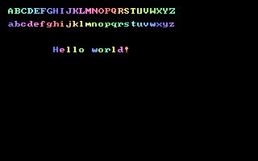

Draw String

Déclaration graphique pour afficher un texte sur
une image ou à l'écran.
Draw String [buffer,] [STEP] (x, y), text[,color [, font [, method [, (alpha|blender)] ] ] ]
Draw String [buffer,] [STEP] (x, y), text [, color]
Draw String [buffer,] [STEP] (x, y), text , , font [, method [, alpha ] ]
Draw String [buffer,] [STEP] (x, y), text , , font, Custom, blender [, parameter]
buffer
blender
Ce mot-clef graphique affiche une chaîne à l'écran avec positionnement des pixels, un arrière-plan transparent et peut utiliser une police personnelle. Draw String ne met pas à jour le curseur texte ou graphique. Il ne coupe pas en fin de ligne. Tabulations, retours chariot et autres caractères spéciaux n'ont pas de comportement spécial dans Draw String, et sont traîtés comme des caractères normaux.
En mode graphique, cette fonction procure une alternative flexible à Print. Elle a plusieurs avantages:
- Draw String peut afficher un texte à n'importe quelle position de l'écran , alors que Print est obligé de respecter la grille de caractères accessibles par Locate.
- Print remplace l'arrière-plan derrière le texte avec la couleur courante d'arrière-plan. Draw String ne fait pas cela et laisse les pixels de l'arrière-plan intacts.
- Comme Put, Draw String a différentes méthodes pour afficher un texte, comme Alpha et Custom.
- Draw String ne se limite pas à un seul jeu de caractères: il est possible de fournir une police personnelle en remplacement.
Note: Si aucune police n'est fournie, Draw String utilise par défaut la police standard, comme pour Print, avec la taille de caractères indiquée par Width. method - s'il est donné - sera ignoré, et le texte sera dans la couleur sécifiée, avec un arrière-plan transparent.
Format de la police personnelle:
La police est stockée dans un tampon Get/Put standard; la police doit être stockée dans un tampon utilisant la même profondeur que la profondeur de couleur courante, autrement Draw String provoquera une erreur d'appel illégal à une fonction.
La première ligne de pixels dans le tampon de la police contient l'en-tête de la police, sur la base d'un octet (not pixel). Le premier octet identifie la version en-tête de la police; actuellement, ce doit être 0. Le second octet donne le code ASCII du premier caractère pris en charge par la police; le troisième octet donne le code ASCII du dernier caractère pris en charge. Ainsi si la police prend en charge de 0 à 255, 0 et 255 seront le contenu de ces deux octets.
Puis vient la largeur de chacun des caractères pris en charge, chacune dans un octet. Supposons que la police prenne en charge 96 caractères, de 32 à 127 (inclus), les trois premiers octets de l'en-tête contiendront 0, 32 et 127, suivis de 96 octets donnant les largeurs des caractères correspondants.
La hauteur de la police est obtenue en soustrayant 1 de la hauteur du tampon, ceci étant, tandis que la première ligne de pixels du tampon agit comme un en-tête de la police, les lignes restantes définissent les glyphes. Le tampon doit être assez large pour contenir tous les dessins des caractères supportés dans la même ligne, l'un après l'autre.
Ceci est un exemple de l'usage basic de Draw String : on l'utilise pour écrire "Hello world" au centre de l'écran:

Cet exemple montre comment vous pouvez créer et utiser votre propre police. Pour plus de simplicité, on utilise Draw String avec la police par défaut pour créer les glyphes.
Syntaxe
Draw String [buffer,] [STEP] (x, y), text[,color [, font [, method [, (alpha|blender)] ] ] ]
Usage
Draw String [buffer,] [STEP] (x, y), text [, color]
Draw String [buffer,] [STEP] (x, y), text , , font [, method [, alpha ] ]
Draw String [buffer,] [STEP] (x, y), text , , font, Custom, blender [, parameter]
Paramètres
buffer
le sprite sur lequel écrire la chaîne. S'il n'est pas précisé, l'écriture se fera à l'écran.
STEPutilise des coordonnées relatives. Si STEP est ajouté, les coordonnées x et y sont calculées par rapport au dernier point tracé.
x, yles coordonnées horizontales / verticales où dessiner, par rapport au coin en haut à gauche de l'écran (sauf si STEP est utilisé - voir au-dessus). Le coin en haut à gauche du texte sera dessiné à cette position.
textla chaîne contenant le texte à dessiner
colorsi aucune police n'a été précisée, ceci vous permet de choisir la couleur du texte. Si omis, la Color d'arrière-plan est utilisée par défaut.
fontun tampon image contenant une police personnalisée. Si aucune police n'est fournie, la police standard dans la résolution du texte actuel est utilisée, et les paramétres suivants sont ignorés.
methodspécifie comment les caractères de la police sont dessinés sur la surface cible. Les mêmes méthodes utilisées pour la déclaration Put sont permises, avec la seule différence que la méthode par défaut est la fonction TRANS.
alphablender
fonction blender personnelle pour la méthode de dessin Custom; voir la description de la méthode Put (Graphique) pour plus de détails. Ce paramètre s'applique seulement à la méthode Custom.
parameterDescription
Ce mot-clef graphique affiche une chaîne à l'écran avec positionnement des pixels, un arrière-plan transparent et peut utiliser une police personnelle. Draw String ne met pas à jour le curseur texte ou graphique. Il ne coupe pas en fin de ligne. Tabulations, retours chariot et autres caractères spéciaux n'ont pas de comportement spécial dans Draw String, et sont traîtés comme des caractères normaux.
En mode graphique, cette fonction procure une alternative flexible à Print. Elle a plusieurs avantages:
- Draw String peut afficher un texte à n'importe quelle position de l'écran , alors que Print est obligé de respecter la grille de caractères accessibles par Locate.
- Print remplace l'arrière-plan derrière le texte avec la couleur courante d'arrière-plan. Draw String ne fait pas cela et laisse les pixels de l'arrière-plan intacts.
- Comme Put, Draw String a différentes méthodes pour afficher un texte, comme Alpha et Custom.
- Draw String ne se limite pas à un seul jeu de caractères: il est possible de fournir une police personnelle en remplacement.
Note: Si aucune police n'est fournie, Draw String utilise par défaut la police standard, comme pour Print, avec la taille de caractères indiquée par Width. method - s'il est donné - sera ignoré, et le texte sera dans la couleur sécifiée, avec un arrière-plan transparent.
Format de la police personnelle:
La police est stockée dans un tampon Get/Put standard; la police doit être stockée dans un tampon utilisant la même profondeur que la profondeur de couleur courante, autrement Draw String provoquera une erreur d'appel illégal à une fonction.
La première ligne de pixels dans le tampon de la police contient l'en-tête de la police, sur la base d'un octet (not pixel). Le premier octet identifie la version en-tête de la police; actuellement, ce doit être 0. Le second octet donne le code ASCII du premier caractère pris en charge par la police; le troisième octet donne le code ASCII du dernier caractère pris en charge. Ainsi si la police prend en charge de 0 à 255, 0 et 255 seront le contenu de ces deux octets.
Puis vient la largeur de chacun des caractères pris en charge, chacune dans un octet. Supposons que la police prenne en charge 96 caractères, de 32 à 127 (inclus), les trois premiers octets de l'en-tête contiendront 0, 32 et 127, suivis de 96 octets donnant les largeurs des caractères correspondants.
La hauteur de la police est obtenue en soustrayant 1 de la hauteur du tampon, ceci étant, tandis que la première ligne de pixels du tampon agit comme un en-tête de la police, les lignes restantes définissent les glyphes. Le tampon doit être assez large pour contenir tous les dessins des caractères supportés dans la même ligne, l'un après l'autre.
Exemple
Ceci est un exemple de l'usage basic de Draw String : on l'utilise pour écrire "Hello world" au centre de l'écran:
Const w = 320, h = 200 ''dimensions ecran
Dim x As Integer, y As Integer, s As String
'' Ouvre une fenetre graphique
ScreenRes w, h
'' Affiche une chaine au centre de l' ecran:
s = "Hello world"
x = (w - Len(s) * 8) \ 2
y = (h - 1 * 8) \ 2
Draw String (x, y), s
'' Attente d'une touche appuyee avant sortie du programme
Sleep
Dim x As Integer, y As Integer, s As String
'' Ouvre une fenetre graphique
ScreenRes w, h
'' Affiche une chaine au centre de l' ecran:
s = "Hello world"
x = (w - Len(s) * 8) \ 2
y = (h - 1 * 8) \ 2
Draw String (x, y), s
'' Attente d'une touche appuyee avant sortie du programme
Sleep
Cet exemple montre comment vous pouvez créer et utiser votre propre police. Pour plus de simplicité, on utilise Draw String avec la police par défaut pour créer les glyphes.
'' Definition espace caracteres
Const FIRSTCHAR = 32, LASTCHAR = 127
Const NUMCHARS = (LASTCHAR - FIRSTCHAR) + 1
Dim As UByte Ptr p, myFont
Dim As Integer i
'' Ouvrir un ecran 256 couleurs (320*200)
ScreenRes 320, 200, 8
'' Creer police personnelle dans tampon PUT
myFont = ImageCreate(NUMCHARS * 8, 9)
'' Place entete police au debut des donnees pixel
#ifndef ImageInfo '' older versions of FB don't have the ImageInfo feature
p = myFont + IIf(myFont[0] = 7, 32, 4)
#else
ImageInfo( myFont, , , , , p )
#endif
p[0] = 0
p[1] = FIRSTCHAR
p[2] = LASTCHAR
'' PUT chaque caractere dans la police et mise-a-jour information longueur
For i = FIRSTCHAR To LASTCHAR
'' Ici nous pouvons definir une largeur utilisateur pour chaque lettre, mais par simplicite nous utilisons
'' une largeur fixe de 8 puisque nous re-utilisons les glyphes par defaut de police
p[3 + i - FIRSTCHAR] = 8
'' Creer un caractere dans tampon police utilisateur en dessinant avec police defaut
Draw String myFont, ((i - FIRSTCHAR) * 8, 1), Chr(i), 32 + (i Mod 24) + 24
Next i
'' Maintenant le tampon police est pret; nous pouvons le sauver avec BSAVE pour utilisation ulterieur
Rem BSave "myfont.bmp", myFont
'' Ici nous affichons une chaine avec la police personelle
Draw String (10, 10), "ABCDEFGHIJKLMNOPQRSTUVWXYZ", , myFont
Draw String (10, 26), "abcdefghijklmnopqrstuvwxyz", , myFont
Draw String (66, 58), "Hello world!", , myFont
'' Libere la police de la memoire, maintenant que nous en avons fini
ImageDestroy myFont
Sleep
Const FIRSTCHAR = 32, LASTCHAR = 127
Const NUMCHARS = (LASTCHAR - FIRSTCHAR) + 1
Dim As UByte Ptr p, myFont
Dim As Integer i
'' Ouvrir un ecran 256 couleurs (320*200)
ScreenRes 320, 200, 8
'' Creer police personnelle dans tampon PUT
myFont = ImageCreate(NUMCHARS * 8, 9)
'' Place entete police au debut des donnees pixel
#ifndef ImageInfo '' older versions of FB don't have the ImageInfo feature
p = myFont + IIf(myFont[0] = 7, 32, 4)
#else
ImageInfo( myFont, , , , , p )
#endif
p[0] = 0
p[1] = FIRSTCHAR
p[2] = LASTCHAR
'' PUT chaque caractere dans la police et mise-a-jour information longueur
For i = FIRSTCHAR To LASTCHAR
'' Ici nous pouvons definir une largeur utilisateur pour chaque lettre, mais par simplicite nous utilisons
'' une largeur fixe de 8 puisque nous re-utilisons les glyphes par defaut de police
p[3 + i - FIRSTCHAR] = 8
'' Creer un caractere dans tampon police utilisateur en dessinant avec police defaut
Draw String myFont, ((i - FIRSTCHAR) * 8, 1), Chr(i), 32 + (i Mod 24) + 24
Next i
'' Maintenant le tampon police est pret; nous pouvons le sauver avec BSAVE pour utilisation ulterieur
Rem BSave "myfont.bmp", myFont
'' Ici nous affichons une chaine avec la police personelle
Draw String (10, 10), "ABCDEFGHIJKLMNOPQRSTUVWXYZ", , myFont
Draw String (10, 26), "abcdefghijklmnopqrstuvwxyz", , myFont
Draw String (66, 58), "Hello world!", , myFont
'' Libere la police de la memoire, maintenant que nous en avons fini
ImageDestroy myFont
Sleep

Différences avec QB
- Nouveau pour FreeBASIC
Voir aussi